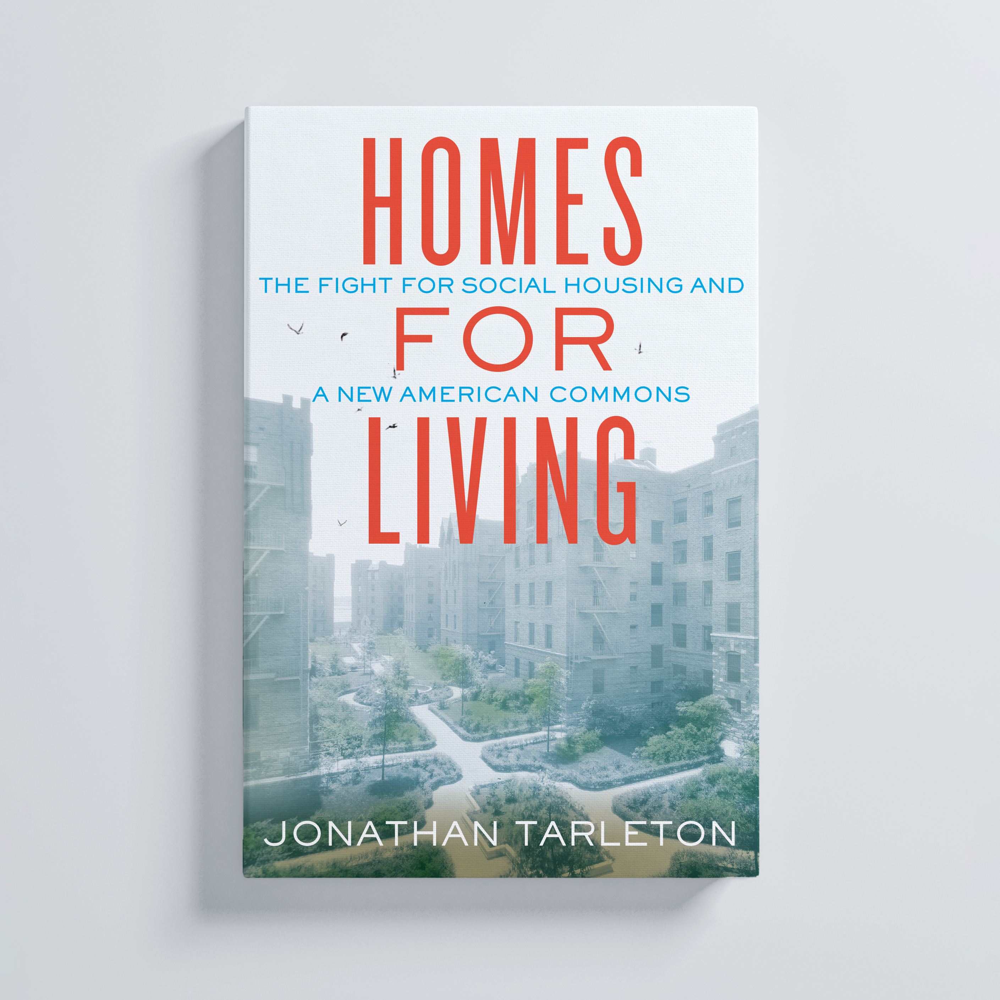

"A new classic of American urban and oral history."
Heather McGhee, NYT-bestselling author of The Sum of Us
A tale of two NYC affordable housing co-ops’ struggle over privatization, public goods, and the future of American housing, coming February 11, 2025.
Preorder now from your local bookstore and beyond
Greenlight Bookstore | Bookshop.org
Barnes & Noble
| Amazon
Join Me In Person
Advance Praise
“Sometimes the general is best understood through the particular and the particular in this book is a wild roller coaster ride through two New York City coops deciding something all of us are deciding all the time—how to weigh individual versus collective benefit, the private versus the public good. Jonathan Tarleton unpacks this drama with both vivid detail and brilliant context.”
— Rebecca Solnit, author of Hope in the Dark: Untold Histories, Wild Possibilities
“Jonathan Tarleton’s account of the battle for Southbridge Towers is an engrossing feat of reporting and a New York City tragedy. The protagonists of Homes for Living are engaged in nothing less than a contest of two opposing visions of the American Dream, and everyone who wants to understand the challenges of creating affordable housing in this country needs to read their story.”
— Henry Grabar, author of Paved Paradise: How Parking Explains the World
“Accessible housing, as Jonathan Tarleton reminds us in this masterwork of urban analysis and storytelling, is a public good that benefits us all — even when it’s not sheltering our own families or lives. At a time when the buildings where we sleep and love and eat and die are often seen less as homes for humans than as commodities to sell, battles over housing have never been more key to shaping our urban future. In Homes for Living, Tarleton brings us, with humane wisdom and deep expertise, to this truth’s vital proving ground: the lives and dilemmas of people struggling to define, in New York and beyond, what will become of our best attempts to create — and defend — forms of housing built not for profit but people. A must-read for every citizen and policy-maker who understands, as we all must, that what befalls our cities befalls us all.”
— Joshua Jelly-Schapiro, author of Names of New York: Discovering the City’s Past, Present, and Future Through Its Place-Names
“Around the country, residents are rising up and fighting for social housing. With Homes for Living, Jonathan Tarleton deepens our understanding of what that struggle entails: what it takes to win, and how to defend against the pull of privatization.”
— Samuel Stein, author of Capital City: Gentrification and the Real Estate State
“There can be no racial justice without housing justice. And while so much of our country’s public policy has deepened racial and socioeconomic disparities, Homes for Living prompts us to learn from a fast-fading history of New Yorkers who once redefined property ownership to foster greater social solidarity. With generosity and insight, Tarleton brings us into a dramatic story of neighbors struggling to choose between private gain and public good. A new classic of American urban and oral history.”
— Heather McGhee, author of The Sum of Us: What Racism Costs Everyone and How We Can Prosper Together
Synopsis
The American Dream of homeownership is becoming an American Delusion. As renters seek an escape from record-breaking rent hikes, first-time buyers find that skyrocketing interest rates and historically low inventory leave them with scant options for an affordable place to live. With home valued more than ever as a commodity, even social housing programs meant to insulate families from cut-throat markets are under threat—sometimes by residents themselves.
In Homes for Living: The Fight for Social Housing and a New American Commons, urban planner and oral historian Jonathan Tarleton introduces readers to two social housing co-ops in Brooklyn and Manhattan. Longtime residents of St. James Towers and Southbridge Towers lock horns over whether to maintain the rules that have kept their homes affordable for decades or to cash out at great personal profit, thereby denying future generations the same opportunity to build thriving communities rooted in mutual care.
With a deft hand for mapping personal histories atop the greater housing crisis, Tarleton explores housing as a public good, movements for tenant rights and Indigenous sovereignty, and questions of race and class to lay bare competing visions of what ownership means, what homes are for, and what neighbors owe each other.
Contact & Media Materials
Press | Mei Su Bailey @ Beacon Press | mbailey@beacon.org
Queries | Ayla Zuraw-Friedland @ Frances Goldin Literary Agency
Headshot | Download Here | Copyright Haleemah Qureshi
Bio | Jonathan Tarleton is a writer, urban planner, and oral historian. He previously served as the chief researcher on Nonstop Metropolis: A New York City Atlas and as the editor in chief of the online magazine Urban Omnibus. His essays have appeared in Orion, Jacobin, Hell Gate, Dirt, and beyond.
{kind=link}